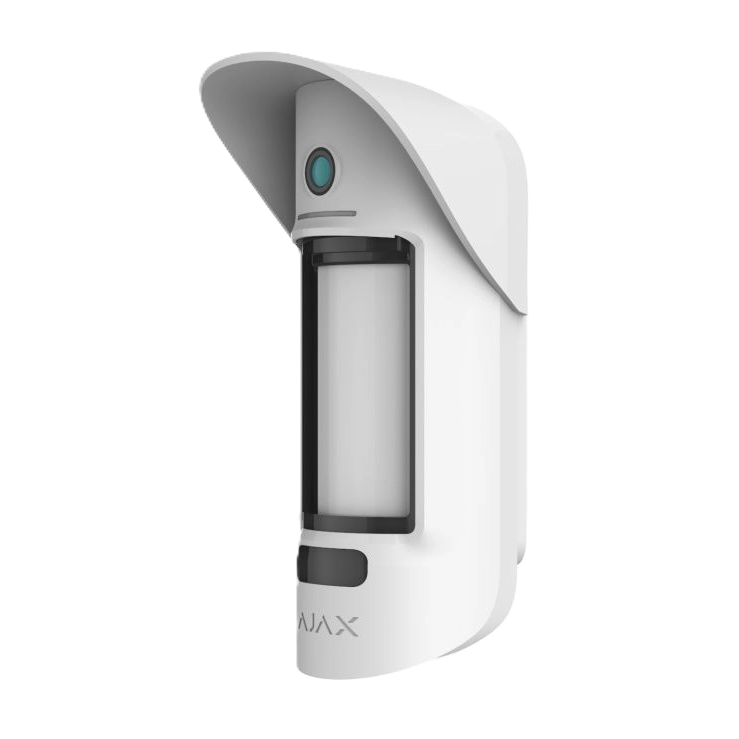
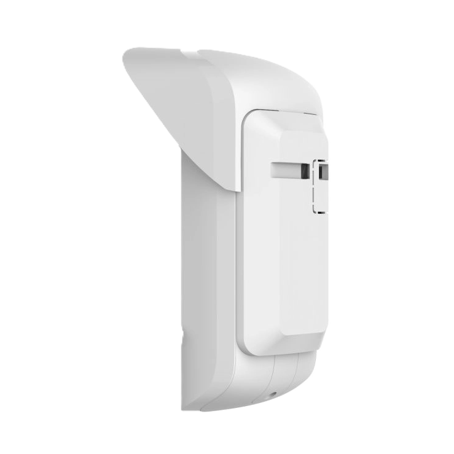
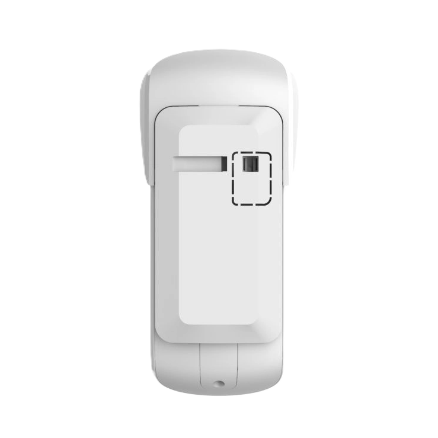

Зовнішній датчик руху з фотокамерою Ajax MotionCam Outdoor




❮
❯
Бездротовий ІЧ датчик руху Ajax MotionCam Outdoor Jeweller з підтримкою фотоверифікації призначений для виявлення руху на вулиці та в приміщенні з автоматичним створенням серії фотографій за тривогою. Обладнаний двома інфрачервоними сенсорами та фотокамерою з ІЧ підсвічуванням для зйомки вночі. Дальність виявлення руху від 3 до 15 метрів (налаштовується повзунком), кут виявлення 90° по горизонталі, кут огляду камери 105° × 50°. Створює від 1 до 5 знімків роздільною здатністю 320×176 або 640×352 пікселів. Технологія Wings забезпечує швидку доставку фото (до 9 секунд), технологія Jeweller — надійний зв'язок до 1700 м. Алгоритми LISA та SmartDetect захищають від хибних спрацювань, імунітет до тварин заввишки до 80 см. Працює при температурах від -25°C до +60°C, захист IP55, автономна робота до 3 років від 4 батарей CR123A. Навіс Hood у комплекті захищає систему антимаскування від дощу та снігу.
Основні характеристики:
Основні характеристики:
- 2 інфрачервоні сенсори + фотокамера з ІЧ підсвічуванням
- Фотоверифікація: серія з 1-5 знімків за тривогою
- Роздільна здатність фото: 320×176 або 640×352 пікселів
- Дальність виявлення: 3-15 метрів (налаштовується)
- Кут виявлення руху: 90° по горизонталі
- Кут огляду камери: 105° × 50°
- Час доставлення фото: 9-20 секунд
- 2 технології зв'язку: Jeweller (команди) + Wings (фото)
- Дальність зв'язку: до 1700 м
- Імунітет до тварин: заввишки до 80 см
- Алгоритми LISA та SmartDetect
- Система антимаскування
- Температурна компенсація: -25°C до +60°C
- Автономна робота: до 3 років від 4 × CR123A
- Захист IP55 + навіс Hood у комплекті
- Автоматична зйомка при виявленні руху в режимі охорони
- Серія з 1 до 5 фотографій на вибір
- Дві роздільності: 320×176 пікселів (швидка доставка) або 640×352 пікселів (висока якість)
- ІЧ підсвічування для якісних знімків вночі та за умов недостатнього освітлення
- Миттєве сповіщення з фото на смартфон
- Можливість відразу побачити, хто або що викликало тривогу
- Зменшення хибних викликів служби охорони
- Збереження фото в додатку Ajax для подальшого перегляду
- Швидка доставка: 9 секунд для 320×176 пікселів, 20 секунд для 640×352 пікселів
- Спеціалізована технологія Ajax для передачі зображень
- Двосторонній захищений зв'язок
- Блокове шифрування з плаваючим ключем
- Повторне завантаження пакетів даних у разі збоїв
- Підтвердження доставлення фото
- Радіочастотний гопінг для запобігання глушінню
- Дальність передачі: до 1700 м (як і Jeweller)
- Оптимізація розміру файлів для швидкої доставки
- Пропрієтарна технологія Ajax для передавання команд, тривог і подій
- Дальність зв'язку: до 1700 м (між датчиком і хабом за відсутності перешкод)
- Двосторонній зв'язок з хабом
- Блокове шифрування з плаваючим ключем
- Передовий захист від саботажу
- Миттєві сповіщення про події
- Дистанційне керування та налаштування
- Радіочастотний гопінг для запобігання глушінню
- Діапазони радіочастот: 866-926.5 МГц (залежно від регіону)
- Максимальна потужність: до 20 мВт (автоматичне регулювання)
- Модуляція: GFSK
- Подвійна інфрачервона технологія виявлення
- Два незалежні сенсори аналізують рух одночасно
- Спрацювання тільки при підтвердженні обома сенсорами
- Різко зменшує ймовірність хибних тривог
- Високоточне виявлення людини
- Чутливість до зміни температури в зоні виявлення
- Надійна робота в різних погодних умовах
- Кут огляду камери: 105° по горизонталі, 50° по вертикалі
- Покриває ширшу зону ніж ІЧ датчик (90°)
- Бочкоподібна TV дисторсія: 17% (стандарт EBU)
- ІЧ підсвічування для зйомки вночі
- Автоматична активація підсвічування за умов низького освітлення
- Якісні знімки навіть у повній темряві
- Налаштування роздільності: 320×176 або 640×352 пікселів
- Регулювання кількості фото в серії: від 1 до 5 знімків
- Регульована дальність за допомогою повзунка на корпусі
- Мінімальна дальність: 3 метри (для невеликих зон)
- Максимальна дальність: 15 метрів (для великих територій)
- Оптимальна висота встановлення: 0,8-1,3 метра
- Можливість точного калібрування під конкретний об'єкт
- Зменшення хибних спрацювань за межами зони інтересу
- Економія енергії при меншій дальності
- Виявляє рух від повільної ходьби (0,3 м/с) до швидкого бігу (2 м/с)
- Оптимальний діапазон для виявлення людини
- Не реагує на дуже повільні рухи (гілки дерев на вітрі)
- Не реагує на дуже швидкі рухи (птахи, листя)
- Направлення лінзи має бути перпендикулярним шляху руху
- Максимальна ефективність при русі поперек зони виявлення
- Не реагує на домашніх тварин заввишки до 80 см
- Розпізнає відмінність між людиною та твариною
- Аналіз швидкості руху та теплового сліду
- Підходить для будинків з собаками середнього розміру
- Підходить для котів та інших невеликих тварин
- Зменшення хибних спрацювань від тварин на 99%
- Фото допомагає підтвердити тип об'єкта
- LISA (Listens to Infrared Sensor Algorithmically) — інтелектуальний аналіз сигналу
- SmartDetect — розумна технологія виявлення
- Програмні алгоритми фільтрують помилкові спрацювання
- Аналіз форми теплового сліду
- Відсівання сигналів від дрібних тварин, птахів, комах
- Захист від спрацювань на рухомі гілки дерев
- Захист від впливу дощу, снігу, граду
- Мінімізація хибних тривог до рівня менше 1%
- Фотоверифікація — додатковий захист від помилкових викликів
- Виявляє спроби закрити або заблокувати огляд датчика
- Контроль наявності перешкод перед лінзою
- Миттєве сповіщення при спробі маскування
- Захист від фарби, стрічки, плівки на лінзі
- Захист від установки перешкод перед датчиком
- Hood (навіс) у комплекті захищає від дощу та снігу
- Важливий елемент професійної системи безпеки
- Ефективне виявлення руху в екстремальних температурах
- Працює взимку при морозах до -25°C
- Працює влітку при спеці до +60°C
- Автоматична компенсація чутливості залежно від температури
- Стабільна робота при різкій зміні температури
- Фотокамера працює в усьому температурному діапазоні
- Підходить для використання в Україні цілий рік
- Низька чутливість: для зон з можливими завадами
- Середня чутливість: стандартний режим (рекомендовано)
- Висока чутливість: для максимальної точності виявлення
- Налаштовується через застосунок Ajax
- Можливість налаштування PRO або адміністратором
- Дозволяє оптимізувати роботу під конкретні умови
- Тривога тампера при спробі відірвати датчик від поверхні або зняти з кріпильної панелі
- Захист від підміни — автентифікація пристрою
- Система антимаскування виявляє спроби заблокувати огляд
- Виявлення втрати зв'язку від 36 секунд
- Захист від радіозавад через радіочастотний гопінг
- Сповіщення про низький заряд батареї
- Фотографії підтверджують справжність тривоги
- Батареї: 4 × CR123A тип C (попередньо встановлені)
- Розрахунковий строк роботи: до 3 років (без затримки на вхід)
- До 2,5 років (з увімкненою затримкою на вхід)
- Діапазон робочої напруги: 3,8–6,2 В⎓
- Номінальна робоча напруга: 6 В⎓
- Споживання в стані спокою: 23 мкА
- Максимальний струм споживання: 906 мА (при зйомці фото)
- Повна ємність батареї: 3200 мА·год
- Напруга низького заряду: 4,65 В⎓
- Напруга відновлення низького заряду: 5 В⎓
- Напруга відпрацьованої батареї: 3,8 В⎓ (пристрій вимикається)
- Виробник батарей: Huiderui або Panasonic
- Розміри: 206 × 108 × 93 мм
- Вага: 470 г
- Діапазон робочих температур: від -25°C до +60°C
- Допустима вологість: до 95%
- Клас захисту: IP55 (захист від пилу та струменів води)
- Колір: білий
- Міцний пластиковий корпус
- Сучасний дизайн
- Захист від пилу (рівень 5) — пило-захищений
- Захист від води (рівень 5) — струмені води з будь-якого напрямку
- Працює під дощем, снігом, градом
- Стійкість до бруду та пилу
- Hood (навіс) у комплекті для додаткового захисту
- Всепогодне використання на вулиці
- Тривалий термін служби в зовнішніх умовах
- Рекомендована висота встановлення: 0,8-1,3 метра
- Призначений для використання в приміщенні та на вулиці
- Встановлюйте Hood (навіс) для захисту системи антимаскування
- Направляйте датчик перпендикулярно до імовірного шляху вторгнення
- Уникайте встановлення поруч з джерелами тепла
- Уникайте зон з рухомими об'єктами (дерева, кущі)
- Налаштуйте дальність виявлення після встановлення
- Перевірте якість фото вдень та вночі після встановлення
- Охорона периметра приватного будинку з фотофіксацією
- Захист входу, воріт, дверей з візуальним підтвердженням
- Контроль території ділянки, саду
- Охорона паркінгу, гаражу з фото порушників
- Захист вікон від проникнення
- Контроль стін будинку, огорожі
- Охорона господарських будівель
- Захист комерційних об'єктів з доказами
- Нагляд за складами на вулиці
- Будь-які завдання зовнішньої охорони з фотоверифікацією
- ✅ Фотоверифікація — візуальне підтвердження кожної тривоги
- ✅ Серія з 1-5 знімків на вибір
- ✅ ІЧ підсвічування для якісних фото вночі
- ✅ Швидка доставка фото: 9-20 секунд
- ✅ 2 технології зв'язку: Jeweller + Wings
- ✅ Висока дальність зв'язку — до 1700 м
- ✅ 2 ІЧ сенсори для максимальної точності
- ✅ Налаштування дальності 3-15 м
- ✅ Імунітет до тварин заввишки до 80 см
- ✅ Алгоритми LISA та SmartDetect
- ✅ Система антимаскування
- ✅ Температурна компенсація -25°C до +60°C
- ✅ До 3 років автономної роботи
- ✅ Захист IP55 + Hood у комплекті
- ✅ Зменшення хибних викликів служби охорони
- Додавання датчика до системи за кілька кроків
- Вибір рівня чутливості (низький, середній, високий)
- Налаштування роздільності фото (320×176 або 640×352 пікселів)
- Вибір кількості знімків у серії (1-5 фотографій)
- Тестування датчика в режимі реального часу
- Перегляд тестових фото для перевірки кута огляду
- Перевірка рівня сигналу Jeweller та Wings
- Моніторинг заряду батарей
- Налаштування часу затримки на вхід/вихід
- Перегляд історії спрацювань з фотографіями
- Віддалене тестування без виїзду на об'єкт
- Оновлення прошивки онлайн
- Охорона периметра будинку: отримання фото зловмисників при спробі проникнення
- Контроль входу: візуальне підтвердження особи, що наближається
- Захист паркінгу: фото автомобілів та осіб біля гаража
- Нагляд за господарськими будівлями: доказ проникнення
- Захист товарів на складі: фотофіксація крадіжок
- Контроль території: візуальне підтвердження подій
- Зменшення хибних викликів: можливість побачити причину спрацювання
- Докази для поліції: фото зловмисників у високій якості
- MotionCam Outdoor має фотокамеру з ІЧ підсвічуванням
- Технологія Wings для передачі фотографій (додаткова)
- Візуальне підтвердження кожної тривоги
- Серія фотографій від 1 до 5 знімків
- 4 батареї CR123A замість 2 (для роботи камери)
- Більші розміри: 206×108×93 мм vs 183×70×65 мм
- Більша вага: 470 г vs 322 г
- Термін роботи: до 3 років vs до 5 років
- Вища вартість (фотокамера та додаткові функції)
- Захищає систему антимаскування від дощу та снігу
- Запобігає хибним спрацюванням антимаскування
- Продовжує термін служби датчика
- Легке встановлення на корпус датчика
- Обов'язковий для установки на відкритих ділянках
- Входить у комплект (не потрібно купувати окремо)
- MotionCam Outdoor Jeweller
- Кріпильна панель SmartBracket
- Навіс Hood
- Монтажний комплект
- 4 батареї CR123A (попередньо встановлені)
- Коротка інструкція
- Працює з усіма хабами Ajax (Hub, Hub 2, Hub Plus, Hub Hybrid)
- Потрібен хаб з підтримкою фотоверифікації
- Підтримка ретрансляторів сигналу (ReX, ReX 2)
- Інтеграція з застосунками Ajax (iOS, Android, macOS, Windows)
- Підключення до пультів централізованого спостереження (ПЦС)
- Підтримка професійного режиму для інсталяторів (PRO)
- Сумісність з усіма пристроями Ajax
- Унікальна фотоверифікація — бачите, що викликало тривогу
- Зменшення хибних викликів служби охорони
- Докази для поліції у випадку проникнення
- ІЧ підсвічування для якісних фото вночі
- Швидка доставка фото за 9-20 секунд
- Надійний захист IP55 з Hood у комплекті
- До 3 років автономної роботи
- Найточніший датчик руху з камерою від Ajax
- Мінімум хибних спрацювань завдяки LISA та SmartDetect
8800.00 грн